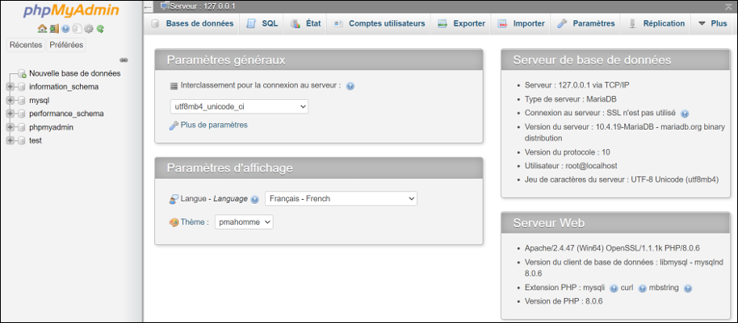

CONTEXT
Hephaestus makes legendary weapons and equipment, and with the help of Hermes, his business is flourishing. Hermes wanted to establish himself in Egypt and managed to take over the administration and management of Hephaestus’ sales. He then wishes to exploit the data collected by Hephaestus during the last centuries in order to increase the sales.
PROJECT IMPLEMENTATION
In this project, we had to move from a database made on Excel, to a database with MySQL under PhPMyAdmin. Next, we created a data dictionary and a logical data model (MCD and MLD). Once our structure was defined, we were able to create our new database. To feed our database from the Excel files provided, we must first convert it to SQL language. To do this, we convert our Excel files to CSV format. This format can then be transformed directly into SQL language. Then we just have to import the obtained files into the database. Once our database was filled, we were able to make SQL queries. Thus we were able to obtain information answering our problem, and to study them.

ACQUIRED SKILLS
In this project, I learned to model data models (mcd, mld, ...), to use a database management system and to use the SQL language.
OPINION ON THE PROJECT
I think this project was very enriching, it allowed me to discover a new programming language (SQL), and to fill a PhpMyAdmin database. I really enjoyed this project because I like managing data.